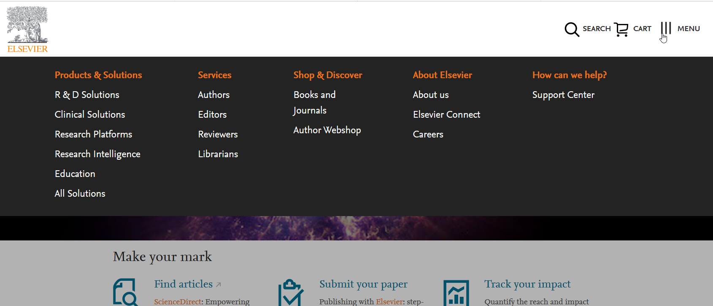

Usability Testing
I've spent many years doing concept and usability testing of all types. Most testing has been one-on-one, either in person in a lab, at a conference or via webex. I consider myself an expert in collecting both quantitative data and qualitative data, making sense of the results, leading to useful recommendations that helps guide projects and teams to make decisions.
I've used my results, and those of 3rd party testing, to revise my own designs when user feedback clearly pointed the way. I strongly believe in having user data drive design.
Finally, in the past several years, I've added capabilities in remote unmoderated testing and A/B testing as tools. It's critical to use the optimum test methodology both from a usability and from a business point-of-view. Note that I don't share any examples of A/B testing due to the confidentiality of the results. I am happy to discuss them if you like.
Baseline Testing and Post Visual-Redesign Comparison
Baseline
A key product was about to go forward with visual rebranding. As a KPI for the product pertained to product usage and ease of use (related to Customer Satisfaction and NPS), the UX team proposed to evaluate the usability of key tasks pre and post-rebrand. I was responsible for planning and execution of the project.
We first verified the key tasks, surveying users who clicked into the product. Below are the task ratings from our top 3 customer segments (names of which are removed), showing significant agreement across all three segments. There was agreement across all segments as to the top 10 tasks. This enabled us to determine those tasks which we would then use for the pre and post-rebrand testing.
Following completion of the survey, I modeled each task in the product, determining success states for each. As the team agreed that we needed valid and reliable statistics to show if there was any usability impact due to visual rebranding. (Improved task flow was not a primary goal of the visual rebranding. The product had not had a visual redesign in several years and product directors felt it was looking very dated.)
To conduct the testing, we procured a 3rd party product that would allow us to reliably test each user and collect both time-on-task and success and failure. I was responsible for all preparation and configuration of User Zoom to collect data for each task, present a random set of tasks (3) to each participant, while ensuring that each task would be completed by approximately 50 participants.
Below are charts showing the total number of users who clicked on the marketing link to participate in the pre-test and the total number of the test.
Success rates showed varying levels of completion by task.
Post Visual Redesign Testing
After rebranding was completed for most screens, we conducted post-rebrand testing for all tasks that could be completed with rebranded screens and dialogs.
I completed the testing in the post-baseline testing project (set-up in User Zoom, analysis of results and eventually reporting). No significant changes to usability metrics were observed, except for one task for which the workflow and screen layouts were modified. In that case, the redesign did result in a significant improvement in user performance (higher success rates). Visual redesign had no significant impact on user performance.
A benefit of the 3rd party product was that it did enable us to identify usability issues that occurred both during the pre and post-testing. Many of the issues occurring in the pre-test were also found in the post-test as we expected, given that revising the screenflow was not a priority at the time. We logged the problems and the UX team now tracks resolution of these and issues identified in other UX activities.
Remote, unmoderated testing of visual style options for field entry
Anecdotal field reports and observations from meetings with users had indicated that some users failed to know where to click after we had adopted a 'flat visual style' for search entry fields.
I led an effort to test the existing style with alternate designs created by the UX team. Four designs (including the existing design) were tested. Volunteers were randomly presented with only one variant and asked to perform a search. Hover behavior was a significant cue for some of the redesigned variants. I measured the time from screen appearance to the moment the user clicked on the search field was captured. No statistically significant differences in time on task were found, though time on task tended to be worse with the current style.

A preference test was administered. After each user completed the click test, the user was then shown all four variants and given the opportunity to interact with each one. Users were then asked to indicate their preferred design among the four designs. Again their was no sig for Each user was then shown each of the four designs and were asked their preference.
None of the new designs were preferred more than the existing design.
Moderated one-on-one testing
Removing the megamenu for a hamburger menu and back again
I led numerous projects that involved testing users in one-on-one fashion, either usign the web or in-person. While there are some differences in technique, I'll highlight one of the most recent projects.
A flagship product was considering a design which removed a mega-menu navigation in lieu of a hamburger menu for it's desktop website. Additionally, they decided to use a 'flat design' for data entry fields. Many of the users of the product were not familiar with phone apps and some were older with poor vision, unfamiliar with other products using flat design.
I conducted the testing asking users to perform various tasks which would involve navigating using the main menu and other tasks that involved searching. Predictably, these tasks caused difficulty for many users. Tasks that were simple and easy to accomplish were difficult. The hamburger menu required users to go to a second level, thus clicking on a menu option to find the option that previously was immediately available on the mega menu. When the options were buried, even one level deeper, many users were unable to find the menu options without help.
The search task posed difficulty because of the unfamiliar appearance (flat with no label) of the search field. Some users sat for more than several seconds. When prompted for their thoughts and what they were trying to do, several users said, they were trying to determine where to enter their search terms.
The product was soon redesigned again (see below), reintroducing a version of the mega-menu on the desktop and providing a responsive experience on tablets and phones. The menu itself was revised to ensure that most important tasks were immediately available at the top level of the menu.
The search feature was revised also, to provide more affordance along with the 'Search' label.
